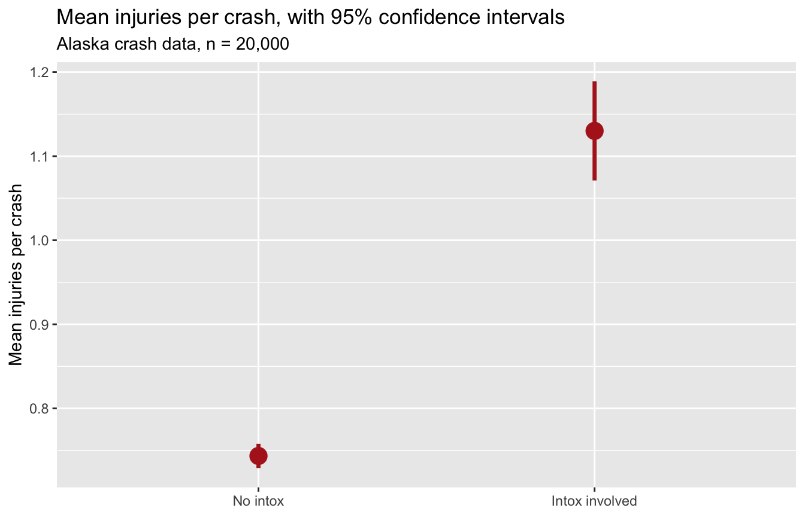

library(tidyverse)
library(BayesFactor) # install.packages("BayesFactor") — once, if you don't have it
set.seed(705)Demo Walkthrough · Session 7
The full pipeline, run once — Alaska crash data, import to verdict
What this page is. The Session 7 worked example, written down step by step. No new statistics — this is the import → tidy → describe → visualize → test pipeline you already own, run start-to-finish on one dataset. Every chunk is self-contained; copy any of them into your own R session and they run as-is.
What you’ll build
- An import where the dates are parsed at the door — and verified
- The variables your question needs that the file doesn’t have (
hour,weekend,night) - Honest description and visualization of the intoxication–injury gap
-
t.test()andttestBF()on the same question — two grammars, one verdict
The folk wisdom holds: 80% of data work is getting and preparing the data — and then the t-test is one line. Every dataset in this course so far arrived clean because your instructor cleaned it. That subsidy ends here.
Setup
Step 1 · Import
The Alaska crash data, with the date column handled up front via col_types (the equivalent Lab 5 habit: import first, then mutate(date = mdy(date)) — two roads to the same real date column):
[1] 020,000 crashes, 2022–2026. Whichever road you take: verify the parse. A silent NA here poisons everything downstream.
Step 2 · Clean and derive
The file has no “night” or “weekend” column. Files never do — you build the variables your question needs:
# A tibble: 2 × 2
night n
<lgl> <int>
1 FALSE 14972
2 TRUE 5028Night hours hold about 25% of all crashes — but look what happens inside the intoxication-involved ones:
# A tibble: 2 × 2
intox_any p_night
<dbl> <dbl>
1 0 0.240
2 1 0.38624% of sober-driver crashes versus 39% of intoxication-involved ones. One mutate() made that pattern visible.
Step 3 · Describe
The Homework 5 question, back for a verdict: do crashes involving an intoxicated driver injure more people?
# A tibble: 2 × 4
intox_any crashes mean_inj sd_inj
<dbl> <int> <dbl> <dbl>
1 0 18455 0.743 0.997
2 1 1545 1.13 1.18 0.74 vs. 1.13 injured people per crash. Point estimates — you know by now that’s not the final word.
Step 4 · Visualize
Session 5’s confidence interval, built by hand and drawn with an honest caption:
inj_summary <- crashes |>
mutate(intox_group = factor(intox_any, labels = c("No intox", "Intox involved"))) |>
summarize(n = n(), mean_inj = mean(injuries), sd_inj = sd(injuries),
.by = intox_group) |>
mutate(se = sd_inj / sqrt(n),
ci_lo = mean_inj - 1.96 * se,
ci_hi = mean_inj + 1.96 * se)
ggplot(inj_summary, aes(intox_group, mean_inj)) +
geom_pointrange(aes(ymin = ci_lo, ymax = ci_hi),
color = "firebrick", linewidth = 1.2, size = 1) +
labs(title = "Mean injuries per crash, with 95% confidence intervals",
subtitle = "Alaska crash data, n = 20,000",
x = NULL, y = "Mean injuries per crash")
The intervals don’t come close to overlapping. Formal tests next — both traditions.
Step 5a · Test it — frequentist
t.test(injuries ~ intox_any, data = crashes)
Welch Two Sample t-test
data: injuries by intox_any
t = -12.489, df = 1732.6, p-value < 2.2e-16
alternative hypothesis: true difference in means between group 0 and group 1 is not equal to 0
95 percent confidence interval:
-0.4474533 -0.3259893
sample estimates:
mean in group 0 mean in group 1
0.7433758 1.1300971 Same gotcha as Homework 5: R computes group 0 − group 1, so the negative signs mean the intoxication group is higher. t(1733) = −12.5, p < .001.
Step 5b · Test it — Bayesian
BayesFactor insists the grouping variable be a factor — so we hand it one:
Bayes factor analysis
--------------
[1] Alt., r=0.707 : 2.133904e+43 ±0%
Against denominator:
Null, mu1-mu2 = 0
---
Bayes factor type: BFindepSample, JZSBF10 ≈ 2 × 1043: the data are astronomically better predicted by “the groups differ” than by “no difference.”
A formatting aside: depending on your R settings, that number may print as 2.13e+43 (scientific notation) or as a 44-digit integer (if you’ve set options(scipen = 999)). Same number, different formatting — don’t panic either way.
Two grammars, one verdict
- Frequentist: if the true difference were zero, data like ours would essentially never occur — t(1733) = −12.5, p < .001
- Bayesian: the difference model beats the no-difference model by a factor of ~1043
- The estimate, in English: intoxication-involved crashes average 0.33 to 0.45 more injured people per crash (95% CI)
The two frameworks agree here because the evidence is overwhelming; with small samples and borderline evidence they can part ways — Session 6’s collision — and that’s exactly when running both matters. What neither test says: why. Intoxication crashes also differ in hour, speed, and road conditions — an observational gap no test statistic closes.
That’s the whole pipeline: import, derive, describe, visualize, test — and the tests were the shortest part. The rest of the workshop turns this loose on the dataset you’re proposing for your final project (Lab 7, and the final project page for the dataset-selection requirements).
Try a variation
- Swap the grouping variable: do weekend crashes injure more people than weekday ones? Run all of Steps 3–5 with
weekendin place ofintox_any. - Ask the same intoxication question about
fatalitiesinstead ofinjuries. Do both grammars still agree — and does the size of the difference still matter to a policy audience? - Filter to a single county (
filter(county == "Anchorage")) and re-run Step 5. What happens to the CI width and the Bayes factor when n shrinks? - Redefine
nightas 9 p.m.–4:59 a.m. Does the 25%-vs-39% intoxication pattern from Step 2 survive your definition? (Robustness to arbitrary cutoffs is an analysis habit, not a luxury.)